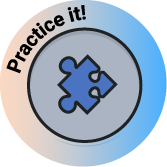

Nesta situação de aprendizagem, você aprenderá a:

Look the images and join their names to discover a new word:
Discover new words by joining these two words together:
Congratulations! You finished this exercise and discovered a bunch of new words!
You can play again by pressing the restart button:
Observe the image:
Roger uses spreadsheets to organize his life. Watch the video and pay attention to all the details:
Son: Hey Dad, I wanted to talk to you about my summer spending.
Dad: Sure, what's up?
Son: Well, I wrote all my expenses in a spreadsheet.
Dad: That's great! It was important to know where your money went. So, what did you spend money on?
Son: Well, I spent some on entertainment like going to the movies and hanging out with friends. But I also bought some new clothes for school and paid for a few meals when we went out.
Dad: Okay, sounds reasonable. Did you spend within your budget?
Son: Mostly, but I did go over a little bit in the entertainment category.
Dad: That's okay. Did you save any money?
Son: Yes, I managed to save some from my part-time job earnings.
Dad: That's fantastic! Saving was important too.
Son: Thanks, Dad. I'll continue to keep an eye on my spending and make sure I was responsible with my money.
Roger talked about his summer spendings using the simple past. Open the pins in the infographic below and read the basic rules of this tense:
The simple past tense is used to talk about a completed action in a time before now. The simple past is the basic form of past tense in English.
The simple past is formed by patterns of regular and irregular verbs. Regular verbs:
Irregular verbs:
Time expressions used for the past simple are: yesterday, a week (month, year) ago, last (month, year, weekend, Monday) night, the day before yesterday, two days (months, years) ago.
Definition: Performing operations on the input data to convert it into information.
Process: It involves computational tasks, such as filtering and performing calculations on the data. Algorithms and programming scripts are used for more processing.
Definition: Storing processed data for future analysis
Process: Processed data is stored in databases or other storage systems to ensure accessibility and data preservation.

Speaking activity: In pairs, discuss the questions below. One student is A and the other is B:
Questions A:
Questions B:

Look at the images below and the words in the chart and match them:

In all the examples mentioned before, they have different systems. Databases are essential for storing and organizing information in these different systems. Read the text below about databases:
Databases are very important for keeping and organizing information in different systems, like email programs, websites, and web browsers. They help manage data in an organized way. Databases store data in one place, making it easy to find and use in different programs and on different devices.
They work by storing data in a way that allows different pieces of information to be connected. For example, in a database for a website, information about users and their posts might be linked together, so when you look at a user's profile, you can also see their posts.
Databases also make sure that the data stored in them is correct and reliable. They use rules to check that the data entered is accurate and they keep it safe from people who shouldn't be accessing it.
Databases also help make sure that data can be used by many people at the same time without causing any problems.
Do you know what the bold words “by storing” in the text mean? If you don’t, read the explanation below:
Using the word by + a verb with ing means ‘how to do something’
We use by + -ing form to describe how to do something:
By pressing this button, you turn on the alarm system. Then by entering the code 0089, you can turn it off again.
According to the picture above:
A system administrator is an important occupation for the IT area. Open the pins in the image and read what system administrators do at work.
While working, the system administrator monitors the computer systems for any problems.
The system administrator checks for updates before installing new software on the computers.
After fixing a technical issue, the system administrator documents the solution for future reference.
While setting up user accounts, the system administrator ensures that each user has the appropriate permissions.
After completing maintenance tasks, the system administrator tests the systems to ensure they are running well.
Until, before, after, when and while are important time conjunctions. Do you know how to use them? Look the chart to learn their usages and examples.
| TIME CONJUNCTIONS | |
|---|---|
| UNTIL: We use until to tell the point in time up to which time something happens. Ex.: The dog was sitting still until Mark came back. | BEFORE: If things happen before, then they happen earlier than the event mentioned. Ex.: Brian worked as a librarian before he started his career in a multinational company. |
| WHILE/WHEN: We use when and while to indicate the time when things happen, usually when they happen at the same time or one after another. EX.: When he is sad, he loves listening to classical music. They talked about politics while they were waiting for the bus. | AFTER: If they happen after, they happen later than the event mentioned. Ex.: After running a marathon, Sam was exhausted. |
Speaking activity: In pairs or in groups use the correct time conjunctions:
Now, as you learned some administrative problems, you are going to listen to a dialogue between Richard and Marcus, coworkers, who are talking about a specific problem at work.
Richard: Hi, Marcus! Did you notice the email from the boss yesterday?
Marcus: Yes, I did. He was talking about the new project.
Richard: I know, but while I was working on it, the internet suddenly stopped working!
Marcus: Oh no, that's terrible! What did you do?
Richard: I called the IT department, but they were already busy helping someone else.
Marcus: That sounds frustrating. Did they fix it quickly?
Richard: Yes, eventually. They were working on it for about an hour.
Marcus: Well, at least it's sorted out now. Let's hope we don't have any more problems today!
Read the sentences from the dialogue. Do you know which tenses the sentences are written?
Look at the differences between the simple past and the past continuous in the chart below:
| SIMPLE PAST | PAST CONTINUOUS |
|---|---|
| It is used for completed actions, habits and facts in the past. | It is used for interrupted actions, specific time as an interruption and parallel actions. |
Examples:
|
Examples:
|